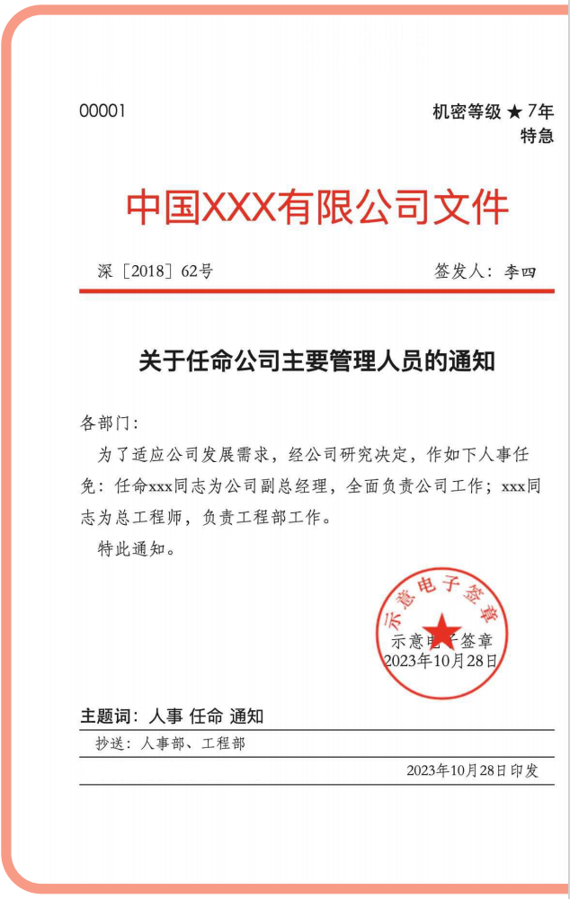
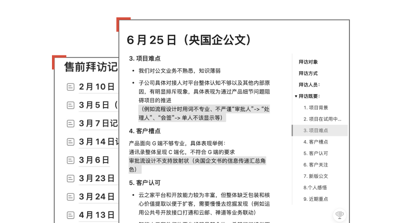
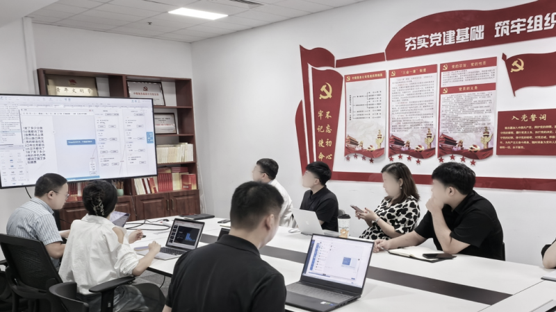
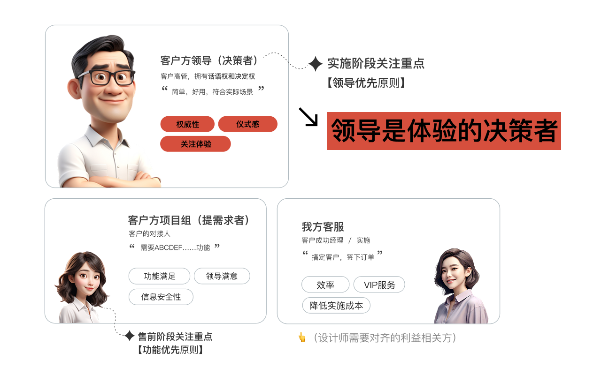

Case Study / 用研/客户体验提升
2024-2025
OA办公平台
从0到1的复杂业务。
深度用研，体验优先的设计。
无障碍设计、通用设计。

OA办公平台
Enterprise Solution
01
售前阶段：深入了解业务
面对复杂又陌生的业务，
设计师如何下手？
通过主动介入业务，确保设计决策不再是"盲人摸象"。
✦ 设计师参与到一线现场的 售前阶段 ，在市场中感受自己的产品与竞品
✦ 田野调查，到客户现场 ，收集不同行业、不同角色的用户反馈
✦ 邀请专家培训，提升研发团队对业务的理解

我的售前笔记

客户使用场景
02
用研成果转化
我们发现了什么？
B端OA产品利益相关方中
"领导"这一类用户最为关注产品体验
此外，领导还是达成业务目标的关键点

03
体验保障
如何保障体验？
🤖
Phase 01: AI Studio 原型
产品经理利用 AI Studio 工具快速生成初始交互逻辑与功能大纲，将模糊想法结构化。
PM Led
⌨️
Phase 02: AI 编程 Demo
作为设计师，我利用 AI 辅助编程，将静态稿直接转化为可交互的 Web Demo，甚至包含实时数据反馈。
Designer Led (My Core)
🎙️
Phase 03: 高层决策确认
拿着"所见即所得"的 Demo 现场汇报给高层领导。这种高保真的体验让领导能瞬间感知核心价值，快速决策。
Stakeholder Review
🏗️
Phase 04: 精细化落地
输出组件与设计规范（.md），开发使用AI辅助实现组件。输出核心视觉稿，AI代码实现最终效果，实现设计与开发的高效协同。
Development
04
设计过程
如何设计？
01
场景化设计
围绕"办文、办会、办事"三大核心场景，构建统一的信息架构和交互模式。
02
多屏适配方案
针对PC、平板、手机三端进行差异化设计，支持跨设备无缝切换。
03
无障碍与适老化
遵循WCAG AA标准，实现高对比度、大字体、语音辅助等功能。
05
项目资产
如何沉淀项目资产？
调研范围：8家央企，覆盖政府、能源、金融等行业
用户画像：决策层（55-65岁）、执行层（35-45岁）、操作层（25-35岁）
核心需求：公文流转效率、会议管理、移动办公支持
技术约束：私有化部署、数据安全、国产化适配
06
作品展示